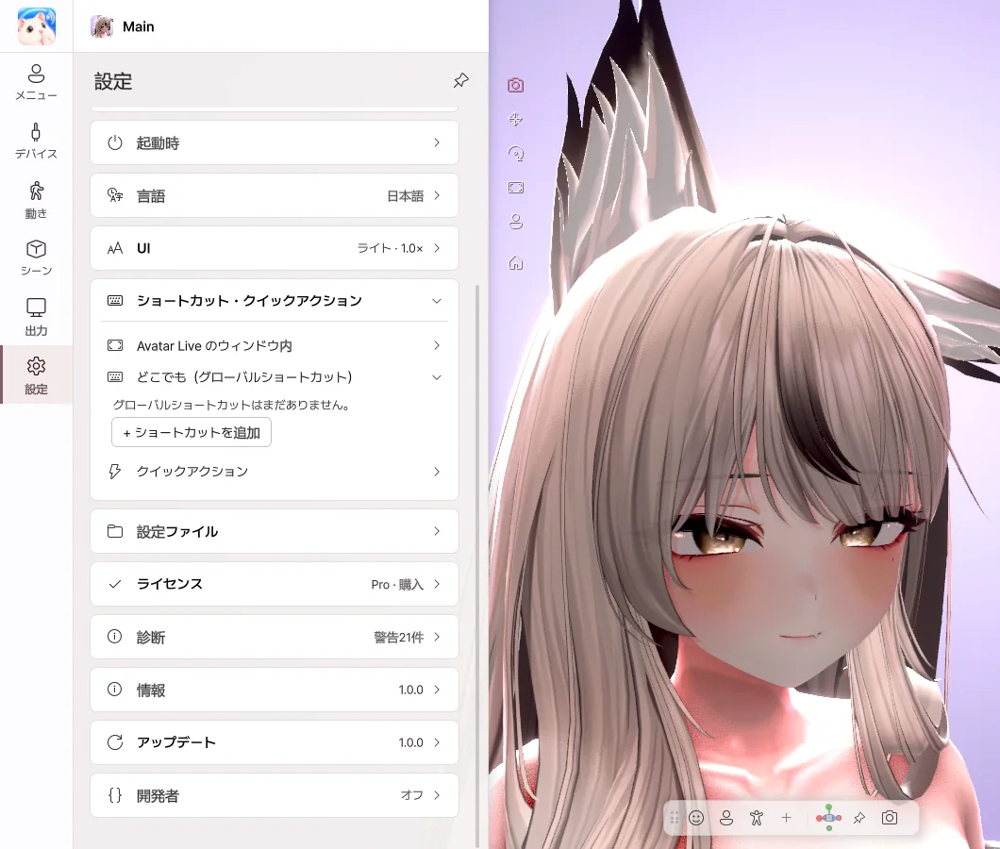

10. 設定
一般・ウィンドウ・パフォーマンス

- 起動時にメニューを開く — オフにすると、メニューなしで起動します。
- ウィンドウ — ウィンドウのサイズ、全画面、常に最前面、X ボタンの動作を決めます。
- パフォーマンス — フレームレートと画質を決めます。下げると PC の負担が軽くなります。
- 影 — 髪やあごが、首や胸に落とす影です。オフにすると GPU の負担が軽くなります。
- 言語 — 한국어・English・日本語・简体中文
- UI — テーマ、パネルの位置、文字の大きさを変えます。
ショートカット

- + ショートカットを追加 を押して、動作とキーを選びます。
- ゲーム中や、Avatar Live が背面にあるときでも動作します。
- ほかのソフトへのキー入力は、そのまま届きます。
- メニューのボタンとジェスチャーは、押している間 か 押して切り替え を選べます。
ライセンス
現在のエディションを確認できます。
| ボタン | 内容 |
|---|---|
| 別のコードを入力 | 別のライセンスに切り替えます。 |
| Proにアップグレード | BOOTH で購入したアップグレードを入力して、Pro にします。 |
| 今すぐ確認 | ライセンスを再確認します。 |
診断・アップデート
| 項目 | 内容 |
|---|---|
| エラーレポートを送る | 問題が起きたときに、説明とログを送ります。押したときだけ送信されます。 |
| ログフォルダーを開く | ログファイルを確認します。 |
| 今すぐ確認・ダウンロード | 新しいバージョンを確認して、ダウンロードします。 |
| 再起動してインストール | すぐにアップデートします。アバターと設定はそのままです。 |